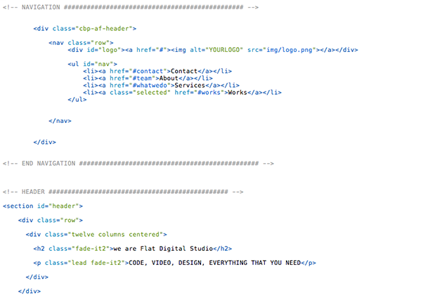
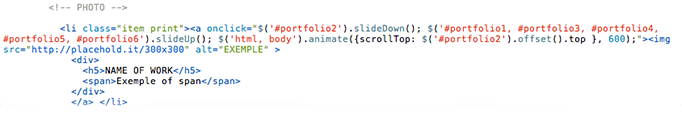

Created: 08/14/2013
By: Supview
Email: hello@iamsupview.be
Thank you for purchasing my theme. If you have any questions that are beyond the scope of this help file, please feel free to email via my user page contact form here. Thanks so much!
This theme is a one page portfolio. All of the information within the main content area is nested within a div with an id of "primaryContent". The general template structure is the same throughout the template. Here is the general structure looks like.
 Here is the structure of One Work You can copy cut one of them for adding new work on the grid.
Concerning the Expander PreviewYou can copy cut one of them for adding new expanding preview.
Don't forget if you add more than 6 works, you have always to add it on the onclick function.
As you can see, you can also edit the width of each columns and make display the work as you like! It's based on the Gumby Framework grid, you can see more informations here : Grid of Gumby Framework.
There's always a table of content like this one
/* 01. Key Frames & Font Face 02. Generals Settings 03. Navigation 04. Header Section Settings 05. Works Section Settings 06. Intersection Section Settings 07. Services Section Settings 08. Team Section Settings 09. Get The Template Interection Settings 10. Footer Contact Section Settings 11. Footer Intersection Settings 12. Footer Contact Info Settings 13. Media Queries for Mobile Settings 14. Media Queries for iPad/Tablet Settings */
I'm using four CSS files in this theme.
The first one is hoverex-all.css, this one is used for the social icon when you're hovering an member of the team.
You can have additional information about this on the Documentation of the plugin: Follow this link
The second file named style.css contains all of the specific stylings for the page. The file is separated into sections using:
/* 03. NAVIGATION ================================================== */ some code /* 04. HEADER SETTINGS ================================================== */ some code /* 05.WORKS SETTINGS ================================================== */ some code /* 06. INTERSECTION SETTINGS ================================================== */ some code
The thirth file named gumby.css is the framework that i'm using. you have nothing to touch there. It's for the row and column.
If you would like to edit a specific section of the site, simply find the appropriate label in the CSS file, and then scroll down until you find the appropriate style that needs to be edited.
The Fourth file named metrize.css is the stylesheet for the social icon.
You can see how to use it following this link : Click here
This theme imports Ten Javascript files.
It's the same structure as the index.html for the HTML Part.
For using it with your E-Mail just replace the code below here on line 5.
$email_to = "hello@yourmail.com";
I've used the following images, icons or other files as listed.
Once again, thank you so much for purchasing this theme. As I said at the beginning, I'd be glad to help you if you have any questions relating to this theme. No guarantees, but I'll do my best to assist. If you have a more general question relating to the themes on ThemeForest, you might consider visiting the forums and asking your question in the "Item Discussion" section.